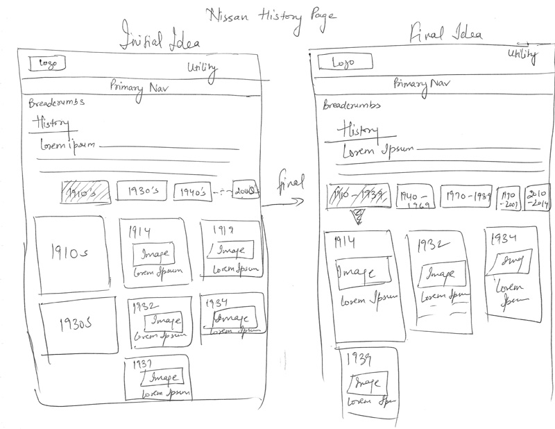

Collaborative Development Example: Nissan History Page
Page Objectives
The History page design and development began relatively late in the overall Nissan site build process. At that point, the main content page templates were already approved and developed on the QA site. This left creative flexibility only within the main content container within the template. The creative team was tasked to utilize this space to present the content on the Flash-based Nissan Corporate History page in a mobile-friendly, non-Flash, responsive format.
Rather than try to develop the concept independent of the rest of the team (and deliver something to "just plop in" to the empty content space), creative reached out to the project managers, IXD, and development before producing any finalized concepts. This allowed the team to collaborate on solutions to the challenges presented by the page requirements, and address potential issues before promising any specific design or functionality to the client.
Rough Creative Concepts
- From: John Heberer
- Date: 11 February 2013
- To: Stephanie Plumeri, Jessican Benoit, Colin Connor, Neha Pahwa, Sean Brittain
- Subject: NISS5538 • INTERNAL ONLY - History Page
Hi All,
So.....I have done a potential History Page comp attached.
I have tried to play around with the idea of this working in some sort of slider format for a timeline while still adhering to our Content Page Template.
As Stephanie had mentioned to me "On mobile this could operate either as a slider or as a list where viewers can click to expand details".
Please take a look and punch holes in it where you see any. Also, it would be great if we could find some time tomorrow to all discuss this as I am slated to have some sort of creative to show the client for Wednesday's call.
Let me know what you all think.
Thanks
John
Feedback Round 1 (via email)
(after responses from the team and testing some timeline scrolling plugins in-browser to determine feasibility)

Feedback Round 2 (team huddle)
(after a 30 minute team meeting to discuss concept and sketch out alernative wireframe concepts)
